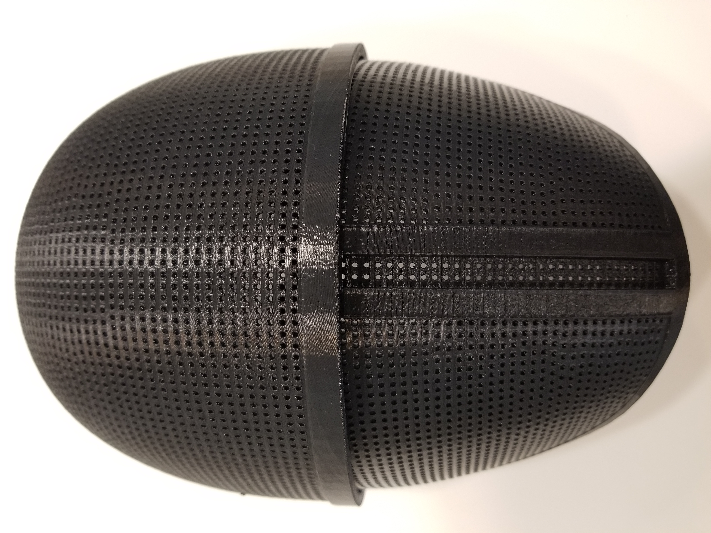
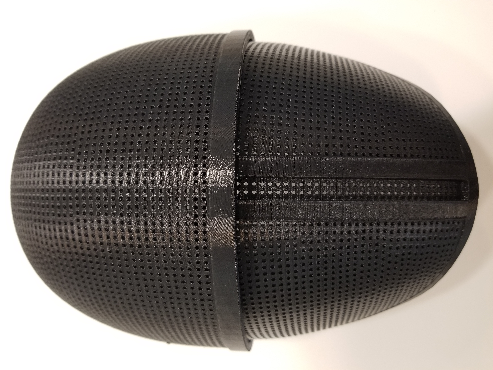

About
A timeline overview of my core pre-med experiences. Click any image for further details!
-

January 2021 - Present
University Hospitals
Glaucoma Researcher and Project Leader
-

September 2019 - January 2022
Case Western Reserve University EMS
Emergency Medical Technician
-

September 2019 - Present
Case For Sight
President
-

September 2019 - Present
Korean Student Association
Co-President
-
September 2019 - March 2020
UH Corneal Image Analysis Reading Center
Corneal Image Analyst
-

March 2018 - June 2021
Roseland First Aid Squad
Emergency Medical Technician


 
